Beaster: A Long Weekend’s Co-op Campaign
A year ago on this very website we spent six months creating and testing a very unofficial supplement for Warhammer 40K that enables you and your mates to fight against orks in co-op battles. This past Easter weekend, I got together with a good chunk of my gaming group* to play it for a four-day campaign of Fury of da Beast. Hence, Beaster. No longer constrained by the need to playtest individual missions, we were keen to play the whole thing as a full campaign, including the nemesis system that enables ork warbosses to level up in response to their encounters with the players.
When you write rules, and spend time playtesting them, it can be hard to switch off that part of your brain and just enjoy the fruits of your labours. But I was determined that it was time to stop thinking like a designer and just have fun.
*Said chunk of the gaming group being: Tom, Drew, Harvey and Maisey; they’re along for the ride on this post.
Explainer: What is Fury of da Beast, and How Does It Work?
Developed with the help of Goonhammer Tabletop Battles patrons and gamers who submitted feedback, Fury of da Beast is a cooperative play supplement for Warhammer 40,000. In it, you battle alongside your friends against Orks following behavioural rules. You'll still need all the official products to play, such as the core rules and codexes. You'll also need a collection of orks, obviously! If you don't have this, but would like to use this as an excuse to start collecting one of 40K's most glorious factions, this post has some advice on where to start.
The supplement has campaign rules built in, enabling you to fight out an Ork invasion from start to finish. You'll be assaulting Ork forts, escorting supply convoys, sneaking behind enemy lines, and assassinating your least favourite Ork Warboss before he levels up too far. If all goes well you'll be fighting extermination missions to finish the Orks off, but if not, you'll end up fighting evacuation missions in a desperate attempt to escape.
If you're so inclined, this game mode has also been written to enable solo play for Warhammer 40K, since we understand that different folks like different strokes. Fury of da Beast is a sequel to our Tyranid co-op equivalent, Fury of the Swarm.
The Planning Phase: Wheres, Whys, and Risks
To play a campaign it helps to know where you’re fighting and what you’re willing to risk, narratively. My gaming group has a persistent sector of space we set all our 40K campaigns in, and our general approach is that having the risk of places and characters being changed or destroyed adds a thrill to our games. With each completed campaign, the sector accrues history and feels that much more alive.
When it comes to risking one’s characters, the trick is to remember that being taken out of play in a game of 40K doesn’t necessarily mean the soldiers in a unit are dead; it just means they have been rendered combat ineffective. This way you can have a risk, albeit a managed one, that one of your precious characters might be changed or even killed by the events of each game. Whether you decide you want the risk of death to be one in six or one in a hundred, the fear of rolling is the key spice.
Campaigns are also opportunities to pick a place in our sector that we haven’t fleshed out much. We decided to set the campaign in the Eressus system, part of a cluster of human systems that warred with each other for millennia before being forcibly unified by the Macharian Crusade that swept through the Segmentum Pacificus. A couple of us were already playing a slow-burn Tyranid invasion of the system using Fury of the Swarm and it seemed fun to have the orks turn up and make things even worse by invading a second planet. It also helped explain why all the same armies were present in both campaigns. So here we had the Eressus system, with Eressus Tertia and its moon Trasenede being invaded by Tyranids, and then the planet Aetolia being invaded by orks.
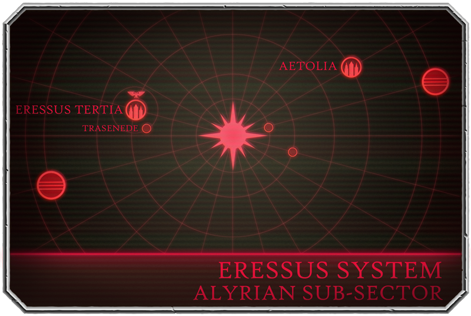
Eressus system map. Credit: Charlie BrassleyTom: I should point out Charlie doesn't just churn out artwork like this for TabletopBattles.com, he does this sort of thing for our games all the time. It’s wild, and you should all cultivate a Charlie in your game group. Even relatively simple graphics like this add a lot to the feeling of immersion.
The Imperial forces had therefore been rushed from Eressus Tertia to Aetolia in the hopes of averting disaster. Consequently many of them, particularly the baseline humans of the Imperial Guard, were exhausted before they even arrived.
The Players and Their Armies
Harvey, Maisey and Tom brought their Imperial Guard. Tom also fielded his Knights, while I deployed my Space Marines. Drew then came squawking in with a fun narrative curveball: she was bringing her Kroot mercenaries. We reasoned that with the Imperial defenders already stretched by the Tyranids, Tom’s radical Ordo Xenos Inquisitor had taken the drastic measure of bringing a Kroot Warsphere full of mercenaries into the system.Tom: Radical is such a charged term, I prefer pragmatic.
Maisey: Pragmatic? I prefer heretical.So in total there were five of us. My house can manage two 6’x4’ gaming tables, so each day we’d split into a team of three and a team of two. The Fury missions are deliberately agnostic about how many players there are; you can play the missions solo but in general I’d say two to three players is ideal. As you’ll see later on in this post, though, we did fight one huge battle with all five players on the same table.
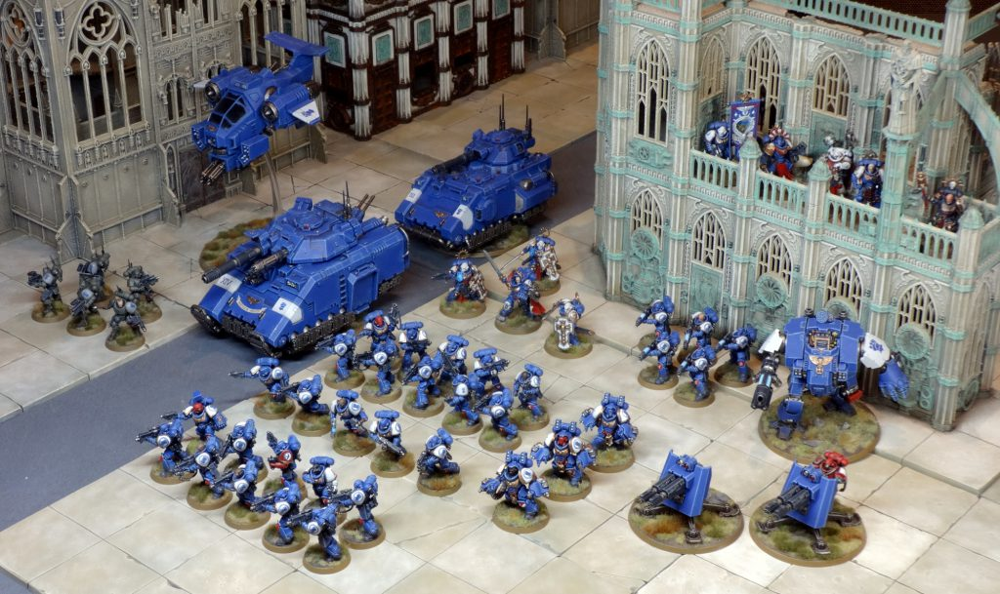
Cobalt Scions Space Marines army. Credit: Charlie Brassley
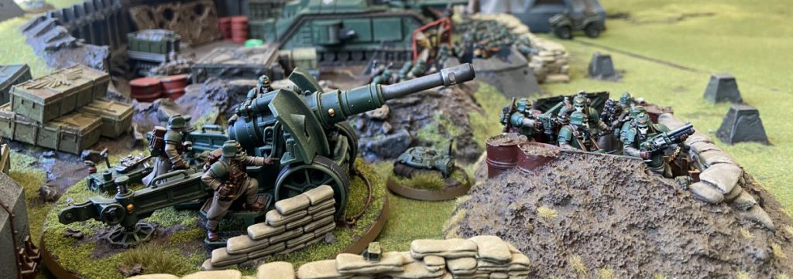
Artillery Team of the Krieg 249th Siege Regiment. Credit: Maisey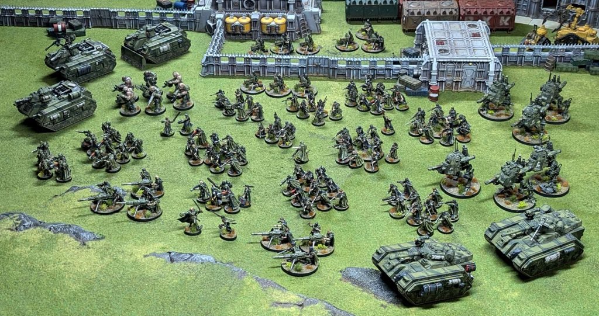
The 31st Nightfall Light Infantry. Credit: Harvey Kent
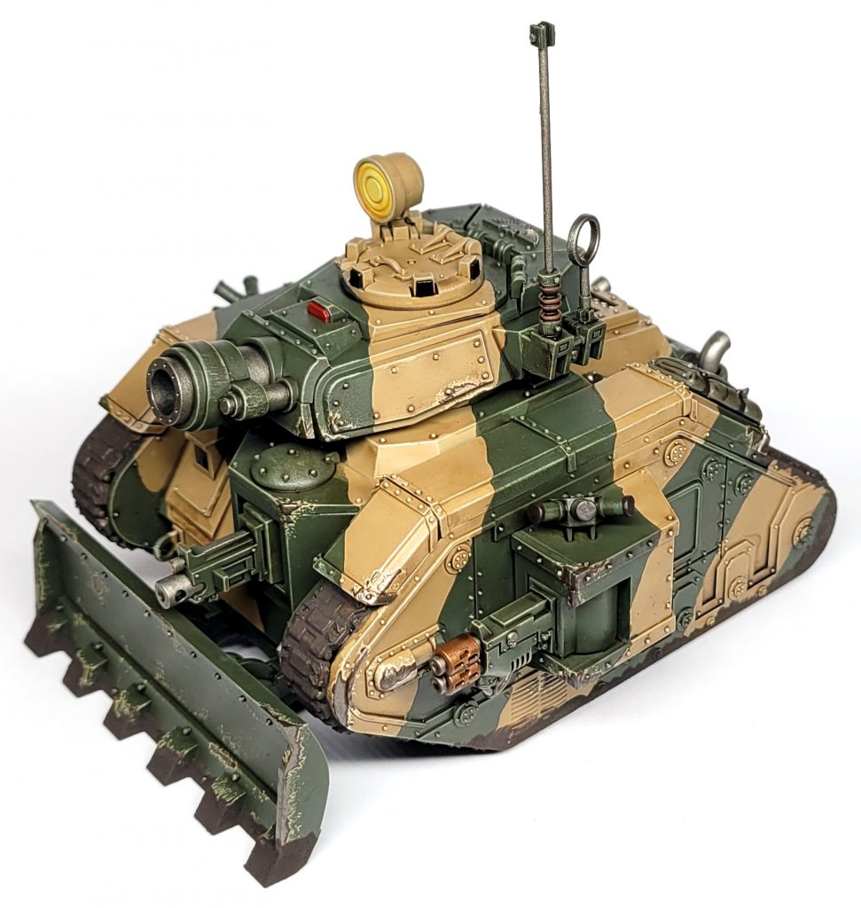
Kasr Derth, Leman Russ Demolisher of the Cadian 53rd Armoured. Credit: Tom Saunders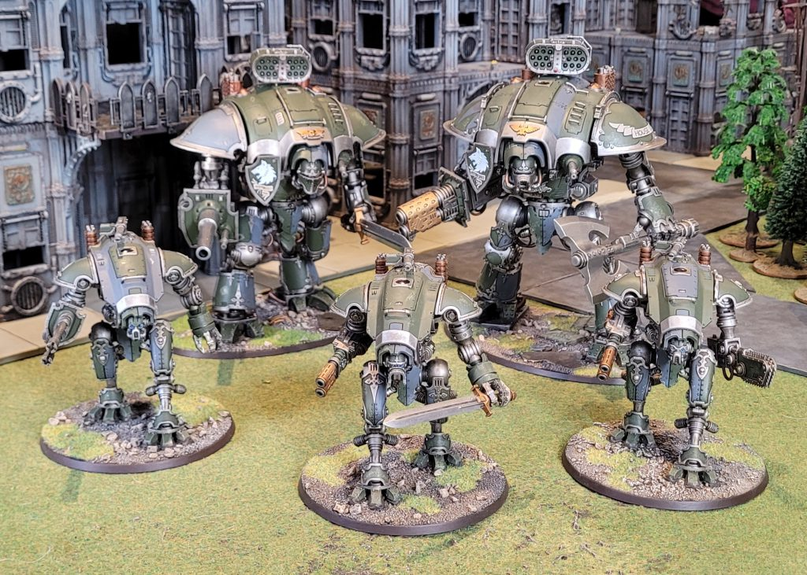
The Knights of House Ulfir. Credit: Tom Saunders
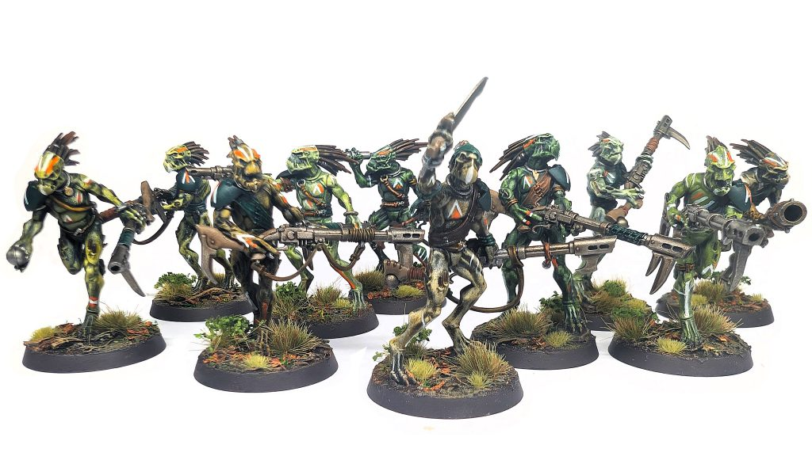
Kroot Carnivores. Credit: Drew ConeIf your desire to know more about any of these armies has intensified, here are some links:
- Charlie's Cobalt Scions
- Drew's Kroot
- Harvey's Recon Company
- Maisey's Krieg
- Tom's Cadians
- Tom's Knights
The Schedule
Friday: Rokfall missions, the first phase of the campaign.Saturday & Sunday: Fulcrum missions, the main battles of the campaign.
Monday: Extermination or Evacuation missions, depending on how the Fulcrum missions go.Friday, Campaign Phase 1: Rokfall
The first phase of the campaign is where you focus on defending naval assets and orbital defences. If you lose the majority of the games you play in Rokfall, the orks gain the upper hand in the void war, triggering additional challenges during the main phase of the campaign.
We decided we’d aim to play four missions during Rokfall, and had to win three of them to succeed in this phase. Since we had time for four games between us each day, this meant we could play Rokfall from start to finish on the Friday.
Harvey, Maisey and Drew deployed their forces on Aetolia’s surface to hold Orbital Defence Silo XIX, whilst Tom and I fought a boarding action representing an ork warboss opportunistically boarding the Inquisitor’s ship, the Accipiter. This is a ship Tom’s had for years and years through various roleplay campaigns, so it's a risk, but we’ve played Beast a bunch and have gotten pretty good, so having this skin in the game added enjoyable suspense.
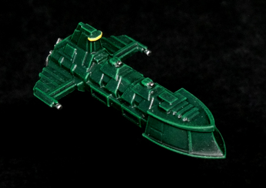
The Accipiter, Ordo Xenos frigate. Credit: Tom SaundersGame 1: Distress Call
Players: Charlie (Cobalt Scions Terminators) and Tom (Ordo Xenos Storm Troopers & Navy Breachers)
Mission: Repel Boarders (Boarding Action)In high orbit above Aetolia, the Inquisition frigate Accipiter broadcasts a distress signal: orks have boarded. The Inquisitor and his retinue of storm troopers are moving to aid the ship’s crew, but are badly outnumbered. The Cobalt Scions strike cruiser Preceptor is passing close by on its way to deploy its company of Astartes to the surface. As the Preceptor passes the frigate, it teleports Terminator Squad Callimachus and Chief Librarian Diokles aboard. The Terminators momentarily distract the orks, enabling the Inquisitor to flee deeper into the vessel, but as Callimachus’ brothers are dragged down one by one, they are forced to teleport out again. Due to the failure of the teleport strike, the Preceptor is forced to break off its orbital drop to come about and aid the Accipiter. Without the expected Astartes reinforcements arriving planetside, a significant number of orbital defence facilities are destroyed by the orks.
Charlie: This game went so badly for us. One the one hand, keeping my Terminators in reserve to come in behind the orks did a great job of pulling them away from Tom’s Inquisitor. On the other hand, Tom’s poor Kasrkin and Navy Breachers had little staying power, and rolled miserably in both shooting and armour saves. A resounding defeat right out of the gate meant that if things didn’t go well for Maisey, Drew and Harvey, we’d lose Rokfall.
Tom: Despite the loss it was great fun. My army was laughably badly optimised, there is absolutely no room for Imperial Soup in Boarding Action, so combining Guard, Navy Breachers and an Inquisitor was a terrible combo. But so fun and thematic! My Inquisitor has primarily been a roleplay character, and seen various incarnations in 40k that are never quite right, but the latest version, made with the Crucible of Champions rules, is the closest yet. I had great fun battling Orks on my ship, did a surprising amount of damage, and got dragged away by my loyal Stormtroopers on one wound after personally killing a meganob.
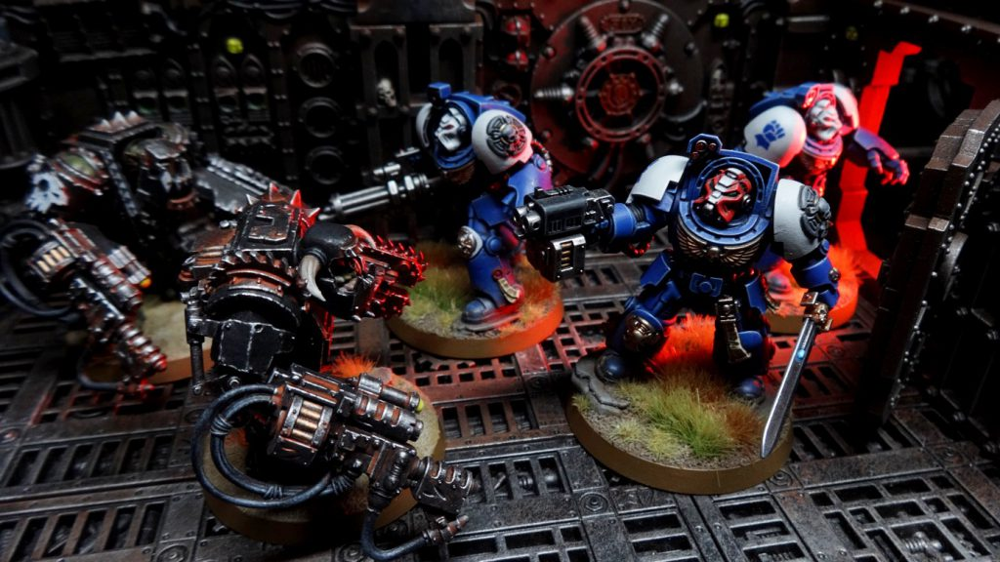
Cobalt Scions Terminators face Goff Meganobz during a boarding action. Credit: Charlie BrassleyGame 2: T Minus Ten
Players: Maisey (Krieg 249th), Harvey (Nightfall 31st), Drew (kroot mercenaries)
Mission: Big Guns Mustn’t TireAcross Aetolia’s surface, the orks’ vanguard forces attack missile silos and defence lasers. Some of these raids are particularly galling; Defence Silo XIX is ten seconds away from launching a ship-killing torpedo into one of the orks’ biggest dropships when the orks manage to damage the launch facility, resulting in the torpedo flying straight into its own mangled blast shields. As a result, the orks’ biggest dropship lands unchallenged, disgorging multiple super-heavy walkers on Aetolia’s surface.
Maisey: This was a tough mission, splitting the points limit three ways always results in challenges when it comes to army composition. The Nightfallers brought a bunch of light vehicles, the Krieg had mostly infantry and artillery, the Kroot brought filthy xenos! (or more infantry which my Imperial brain cannot identify). With the facility quickly surrounded, the Nightfaller Hellhound did some good work but the rest of us fared somewhat worse. I remember the game effectively ended with a platoon of Krieg forming a line and holding the gate, mostly due to an improbably good overwatch, whilst the Kroot and Nightfallers made their escape. The Krieg remembered that their lives belong to the Emperor! But ultimately it was futile as the Ork Deffkoptas managed to blast the launcher with enough rokkits that they took it down without much Imperial (and Kroot) response.Drew: Is ‘BYE!’ not a response?
It was a gnarly kick-off, but in the best sense. Everyone knows the heroes have to start off on the back foot, and we certainly committed to it as the Speed Freaks made light work of closing the distance between their deployment zone and my spindly little bird men. The wrapped around nature of the deployment of the Orks, coupled with the fact that we couldn't leave our post, offered an interesting challenge as we were thoroughly hemmed in. The other major consideration was ensuring there was always something big and mighty for the Orks to shoot at, rather than having their guns turn on the launcher. It was an excellent series of problems that I'd love to have another pop at.Harvey: Hellhounds are the best vehicle the Imperial Guard have do not @me and I am not taking questions at this time.
So, both teams lost their first game, which means the orks won Rokfall. Not an auspicious start!
We were halfway through the day, and there was no technical campaign benefit to fighting more battles. We considered starting the second campaign phase early, but then again it doesn’t all have to be about finishing the campaign as quickly as possible. The orks’ victory aboard the Accipiter meant that Tom’s Inquisitor was now in real trouble, with a mega-armoured warboss rampaging through the ship. Since the warboss had survived the game, we rolled up a name and upgrade for him using the supplement’s nemesis rules. We learned he was Boss Krugbrag, and for his first level up he rolled Brutal, meaning all his Melee weapons without the [EXTRA ATTACKS] ability gain +1 Damage. Bad news for three-wound infantry and vehicles!
Game 3: Kill Krugbrag
Players: Charlie (Cobalt Scions Space Marines) and Tom (Ordo Xenos)
Mission: Repel Boarders (Boarding Action)We decided that the coolest thing to do would be to follow up my failed teleport strike with a full boarding party of Marines, plus Tom’s survivors from the last battle. This time I brought the Chapter’s Judiciar alongside three Bladeguard, whose job was to hunt down the warboss and kill it. The rest of my boarding party safeguarded the Inquisitor.
The execution force went straight for Krugbrag. While they did manage to beat him up, I didn’t have the spare command points to guarantee his death. See, when you destroy a warboss unit in Fury of da Beast, you roll to see whether it makes a kunnin escape, an ignominious escape, or is dead as a doormat. The players can spend CP to gain bonuses to these rolls, which is particularly important since the warbosses also gain bonuses equal to their level!
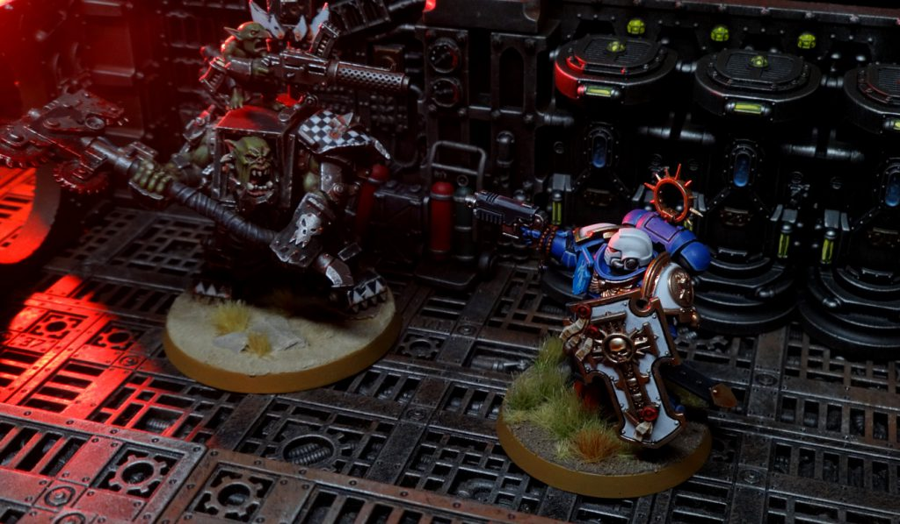
Cobalt Scions Bladeguard Veteran Brother Galadoc faces a Goff Ork Warboss in Mega Armour. Credit: Charlie BrassleyKrugbrag rolled an ignominious escape, but the key thing was that the Inquisitor and his ship was saved. Tom looked very relieved. Even though this second game made no difference to the campaign score, it made a big difference to the story. We imagined that, if the Inquisitor had been taken out, the Imperial-Kroot alliance could have soured and broken apart, dooming the planet. But as it was, the Inquisitor was still here to tell the Commissars and preachers to be selective about which xenos needed to die.
Saving Tom’s ship, and the narrative significance of doing so, prompted me to commemorate the deed on one of my miniatures. My Bladeguard are like questing knights, and get personal heraldry to reflect their deeds. I leave their right pauldrons blank until they do something worthy of remembrance, and which point I figure out a design and freehand paint it on. With the other two Bladeguard already having their designs in place, brother Galadoc was granted this design:
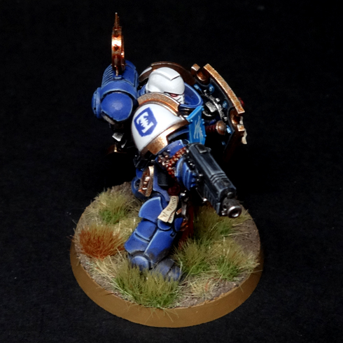
Brother Galadoc's completed pauldron. Credit: Charlie BrassleyGame 4: Reform the Line!
Players: Maisey (Krieg 249th), Harvey (Nightfall 31st), Drew (kroot mercenaries)
Mission: Breach ContainmentMeanwhile Harvey, Maisey and Drew played the Breach Containment mission to represent an attempt to repair the damage caused to the perimeter defences by all the Stompas that landed. They also met with success, meaning the defensive cordon around the capital city of Aeos was successfully patched. It seemed ironic that we lost our first games so hard and then won the second two once it no longer counted!
Maisey: This game was far more successful. The Krieg got to form neat lines, fix bayonets, and throw a bunch of tanks into the mix. I do remember the Kroot-Krewed Hoover Tank Thingy (again, don’t remember Xenos names) and the Nightfallers sentinel squadron doing horrific amounts of damage to an Ork Stompa.Drew: Look man, I'm a simple woman, and sometimes you just want to pour damage into a giant line of greenskins as they come barrelling towards you. The short distance between deployment zones (both sides deploy along the long sides of the board) felt very short indeed, but it was a fun amount of spice. This is the first game where I got to deploy my freshly painted (looted) Hammerhead tank with the Kroot and using it to dumpster Deffkoptas* via the medium of a railgun was an unexpected delight. Narratively speaking my carnivores got to charge and consequently eat one of the Mek Boys, which led to a lengthy discussion about me home-brewing and kitbashing my own Kroot engineer for patching up my newly acquired vehicles. This is one of my absolute favourite ways to do modelling: gaming consequences made manifest.
*Some may call this overkill, and to those I say AHAHAHAHAHAHAHAHAHAHA- yes.Rokfall Concludes
The first day of our campaign was complete. Overall we’d been defeated, but I was looking forward to the added challenge in the battles to come. More importantly, fighting that second boarding action to safeguard the ship meant that its continued existence felt earned rather than handwaved off-camera.
Tom: Narrative. Consequences.Harvey: Since Fury of the Beast (and ‘Swarm before it) have been released, I’ve found myself wanting hardship. Defeats. Losses... Because if there’s no struggle it’s just fanservice for all the characters I’ve got within the Nightfall 31st. Suffice to say after losing an entire stage of the campaign (and therefore making all our following Fulcrum games harder) I was a happy boy!
Saturday, Campaign Phase 2: The Fulcrum
The Fulcrum forms the bulk of the campaign. Winning the majority of your Fulcrum missions determines whether the final campaign phase will involve Extermination missions or, less gloriously, Evacuation missions.
We planned on taking two of the four days to play the Fulcrum, giving ourselves time to get a game in with each of the other players, and seeing various warbosses level up to become threats that had to be dealt with.
We set ourselves the goal of winning five out of eight Fulcrum battles.
Game 5: Resupplying the Fortress
Players: Harvey (Nightfall 31st), Tom (Knight House Ulfir)
Mission: Supply RunA small Nightfall detachment is tasked with the delivery of three self-propelled Basilisk artillery guns to a remote fortress in the highlands north of the capital, in an area otherwise overrun by orks. After being joined by a pair of Imperial Knights of House Ulfir, the artillery survives an ork ambush and reaches the fortress intact, extending the Aetolian garrison’s threat range considerably.
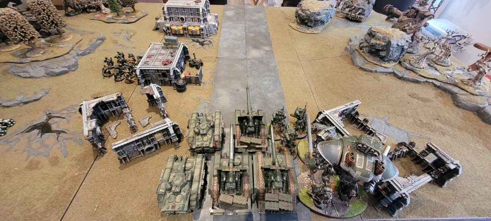
An Imperial convoy escorting a squadron of self-propelled artillery heads into an ork ambush. Credit: Harvey KentTom: The terrain combined with random deployment of orks to give us a clear strategy, push very hard to one side and outrun the other half of the orks with delaying tactics. Tragically, this meant charging my Knight into a Morkanaut for an epic showdown of big robots. Meanwhile the Nightfallers repeated their tried and tested tactic of ramming a Chimera into a choke point and then running away whilst the enemy had to deal with it.
Harvey: I really enjoyed this game. At this point the 31st have a well documented predisposition towards ditching their transports and fleeing while the enemy is forced to deal with a light tank before getting to grips with the actual objective... Or the men themselves. I always enjoy imagining the tankers ditching the vehicle too at the last moments, triggers and accelerator pedals locked down to cause as much chaos as possible. I’m sure the Departmento Munitorum loves us!Result: Imperial Victory
Game 6: Aeos City Holds
Players: Charlie (Cobalt Scions), Maisey (Krieg 249th), Drew (Kroot)
Mission: Breach ContainmentWe assume the native Aetolian Guard number in the millions and are doing the bulk of the fighting across their planet, with our forces representing offworld elites that get deployed to hotspots. This battle was one such time, with our medley of Imperial reinforcements halting the advance of an Evil Sunz warboss called Bonerippa. Once it became clear to Bonerippa that he’d lost, he rolled a kunnin’ escape despite being absolutely surrounded by kroot. We assume some ninja smoke was involved. Or possibly a personal tellyporta. In our notes from the weekend this is the first time Bonerippa gets a mention, but it won’t be the last; he would grow to become the biggest of the various bosses. During his exit from this battle, he accrued a powerful hatred of Drew’s Rampagers.
Drew: BONERIPPA! You sneaky squig sniffer.This was my first taste of the nemesis system in full swing, and the rage I felt at having my Krootox charge and shatter Boss Bonerippa only to have him crawl off the battlefield was as unbridled and it was delicious. It was a great game, with everyone having a comfortable amount of room to excel in their niche (particularly the Krieg Priest who was an absolute UNIT).
Maisey: I remember that Priest getting terribly excited and charging out to meet the orks head on. She pulled a lot of aggro causing the ork charges to be pulled in ways that favoured the defenders. This allowed the Marines to pick their fights and do some serious damage to the orks.Result: Imperial Victory
Game 7: Kranossos Airbase Destroyed
Players: Harvey (Nightfall 31st), Tom (Cadian 117th and 53rd)
Mission: Silence the FlakIn the first serious Imperial counterattack, a combined and determined assault by the Nightfall 31st, Cadian 117th and Cadian 53rd penetrate the defenses of the now ork-held Airbase at Kranossos, destroying the flak towers and withdrawing. Navy marauder bombers then carpet bomb the base, denying it to the orks for the remainder of the war.
Tom: As a Guard player the idea of thrusting your army into an ork-held fortress feels a lot like shoving your hand into a wasp nest. Nevertheless, those were the orders that came down from high command. This was a perfect opportunity to try out the Grizzled Company option of a Commissar ordering Bullgryns, meaning hitting on 2s rerolling 1s. Fun times. Bonk Squad did what Bonk Squad does, aided on one side by a Demolisher-led cavalry charge and on the other by some very aggressive Nightfaller “Kasrkin” action that traumatised and humiliated a Blood Axe warboss.Harvey: At last, real payback for that missile silo. Also, good lord do Kasrkin (or “Ranger Veterans” to the likes of the 31st) kick out damage. Two squads and a Castellan (Lt. Kyrie, commander of my army’s veteran platoon) absolutely sent it up the flank, ably covered by Tom’s Bullgryns and Commissar.
Result: Imperial Victory
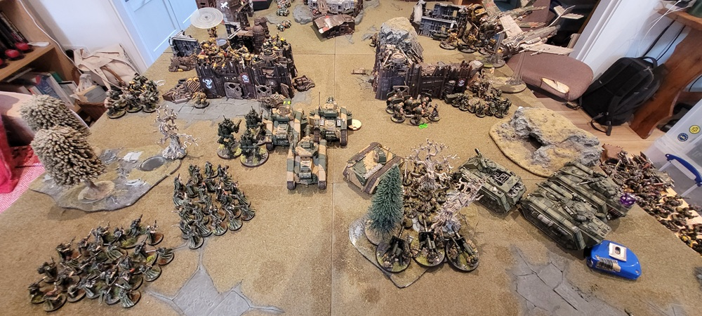
Cadian and Nightfall armoured units rush ork flak emplacements. Credit: Tom SaundersGame 8: Pyrrhic Supply Run
Players: Charlie (Cobalt Scions), Maisey (Krieg 249th), Drew (Kroot)
Mission: Supply RunHaving prevented the collapse of the cordon around Aeios City, it was time to put its stockpiles of supplies to good use by saving the surrounding towns. The Astartes, Imperial Guard and xenos mercenaries escort vital convoys out from the capital, getting crucial medicine, food and ammunition to those towns still in Imperial hands.
In the last of these supply runs, overwhelming ork numbers force the Scions and the Krieg 249th to purchase victory at a high price, sacrificing their own battle tanks to block the orks’ path to the supply trucks. Meanwhile, Boss Bonerippa is forced by the Kroot to make an undignified escape.
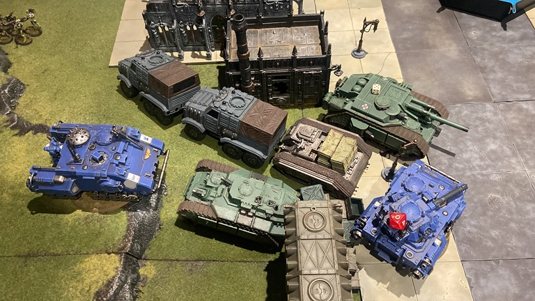
The Cobalt Scions and Krieg 249th each sacrifice one of their tanks to block an ork assault on a supply convoy. Credit: Maisey Maisey: An Army marches on its stomach, and unlike those weird Kroot boys, normal people don’t eat the bodies of their enemies. So protecting those supplies is worth the sacrifice.Drew: UN-TETHERED. His latest Houdini tribute absolutely sealed Bonerippa as my personal nemesis. The boys in blue and green did an amazing job bubble wrapping the trucks whilst the Kroot nibbled their way through the left flank to give us a clear exit. This is one of my absolute favourite missions as it's a fun mix of calculated risks. The unreliable progress of the trucks alongside the respawning Orks means you have to think on your feet, whilst still being limited by your proximity to the trucks.
Result: Imperial Victory
Saturday Concludes with High Fives All Round
We’d won all four of our games this day, which meant just one more victory on Sunday would bring us across the line. We decided to do something big and slightly experimental: all five of us on one 12’x4’ table.
Sunday: The Battle of Ruskol
Sunday afternoon was essentially one big Apocalypse scale co-op game. We each brought 1000 points, and improvised the mission. We would each be facing a 1,500 point ork warband, and we would each deploy our armies in discrete chunks rather than intermingled. This would mean we could assist our neighbours, but we wouldn’t need long tactical chats to figure out each turn. It turned out to be a great decision that kept things surprisingly snappy even though we had 12,500 points of miniatures on the table.
The Narrative Context
With the Imperium having successfully held the line on Saturday, the idea was for this battle to represent the Imperium’s grand offensive.
The offworld forces form the speartip of the counter-attack. They surge out from Aeos City towards the ork-held city of Ruskol, arriving as dawn breaks. With the Imperium’s western flank secured by the River Komarnal, and the open countryside to the east covered by the guns of the Aetolian 53rd Armoured, the orks are given a simple choice: engage the oncoming Imperial elites in battle, or fall back and abandon the city. Given the orks’ superior numbers, Chapter Master Drusus is confident they will be eager for the fight, despite the thunderous footfalls of House Ulfir’s Knights. The Imperial forces know that a breakout here would enable them to encircle whole warbands, and leave the hitherto steady ork advance in disarray.
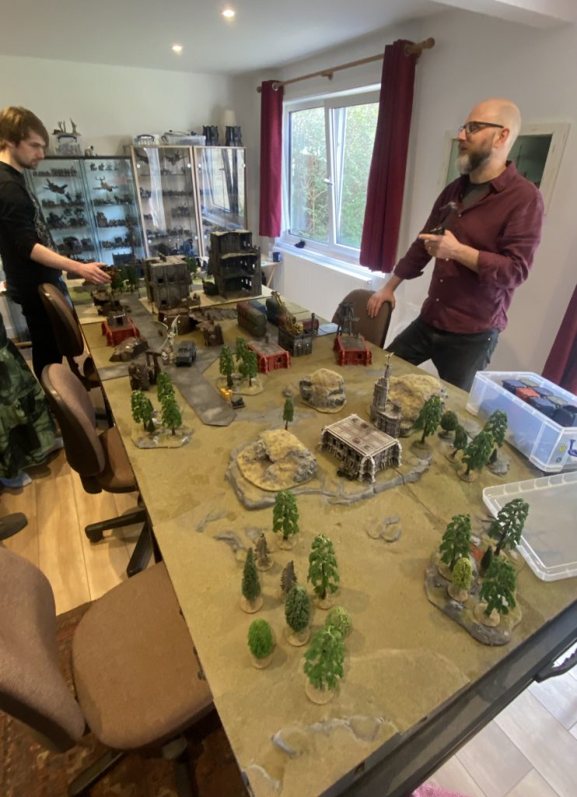
Terrain setup of the 12'x4' battlefield nears completion. Credit: MaiseyThe Mission
Each player was assigned to an equal stretch of the long, thin table. There was some flexibility depending on the lay of the land, but broadly we each had about 30” of space, and could deploy up to 12” on from our board edge. The Orks’ deployment zones began 24” away (so the usual gap). Our deployment slots were randomised, but if memory serves we allowed ourselves one or two swaparoos as preferred. We deployed our armies in their entirety, then randomly assigned the five 1,500 point ork warbands to the five sectors opposite.
As it happened, the Bad Moon warband containing the Stompa set up directly opposite Tom’s lance of knights in the centre. Poor Maisey drew the short straw, with the 249th Krieg Infantry staring down a whole heap of Evil Sunz led by Boss Bonerippa. They would be among the Guardsmen all too quickly.
Maisey: The shortest of straws! Despite that, most of us ended up facing the opponent that least suited us but I think this made for the most challenging and interesting game (Rule 2!). I was hoping to fight the Goffs, lots of infantry for my blast weapons to get stuck into but alas, it was not to be.The objective was simple: end the battle with more total OC in the orks’ deployment zones than they did, and still have a good proportion of our own forces still intact. This kind of hand-wavey objective wouldn’t work for properly written rules, but we felt we’d know if our army was still capable of putting up a fight at the battle’s end. As a rule of thumb, having at least 50% of the players’ points value left on the table is probably OK. This combination of needing to take the orks’ home turf while preserving our own units would hopefully do a reasonable job of making us play aggressively but not recklessly.
How It Went
On my left flank, I knew Tom’s knights aren’t amazing at handling enemy super heavies at range, so in our first turn I threw my Repulsor Executioner’s big honking laser into the Stompa and put a bloody great big hole in it, after which Drew did the same with her kroot-crewed Hammerhead (Tom: kroot-krooed?) (Drew: Kroot-Kroo’d!). All of a sudden the knights were clear to storm in and finish it off.
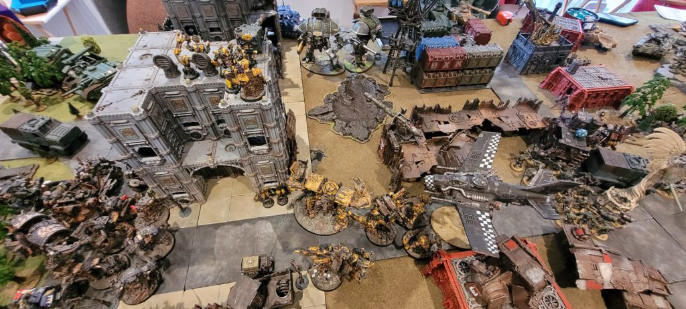
The Bad Moon warband is left with a sudden Stompa-shaped hole, leaving the smaller walkers vulnerable to the Knights of House Ulfir. Credit: Tom SaundersMeanwhile on my right flank, Maisey looked on in despair as an avalanche of Trukks and bikes sped towards the Krieg infantry, led by Boss Bonerippa in his kustom Battlewagon. A few of the vehicles were brought low, but the vast majority were still rushing on. I was able to send a small amount of support fire their way, but for the most part had to deal with the horde of Deathskull walkers stomping towards me, along with a bevvy of Bad Moon Nobz that fled the Stompa following its destruction. Happily, it turns out Eradicators are absolutely the lads you want when facing lots of walkers. But, by the time I had things under control, Maisey’s Krieg had been half-overrun by Bonerippa’s Evil Sunz. (Maisey: But it made for some heroic last stand sacrifices!)
This was the first time we discussed what to do as a group; we all felt that if the orks broke through anywhere, the Imperial assault would become disordered and ultimately fail, so we had to find a way to support the battered guardsmen. Harvey had some armoured sentinels in reserve, and Tom’s knights were in a position to handle the remaining Deathskulls I was facing. With Tom handling my left flank, I could swing my full army around and unload into the Evil Sunz, giving Maisey’s survivors a storm of support fire. The Krieg still had a Leman Russ and some infantry in play, and between us we managed to drive the Sunz off, including the seemingly irrepressible Boss Bonerippa. Harvey’s Armoured Sentinels and Tom’s Knights served as our scoring OC while we chased off the last of the orks. It was a little ragged, but it was a win, and some pleasing teamwork to boot. The grand assault had succeeded, delivering our fifth straight win in the Fulcrum and, therefore, unlocking the opportunity to kick the orks off the planet in the third and final phase: Extermination.
Honestly I think this might have been my favourite game of the weekend.
Tom: This was absolutely the most fun I’ve had with Knights. I think Big Stompy Robots are best when arrayed next to normal sized people so you can really see how big and stompy they are, but generally that means fitting just one or two into an army of something else. With this scenario I could commit my full lance and still be a minority of the force. And then I got to hurl myself against some nasty but not as nasty as me ork mechs. Once my allies popped the Stompa it was an unstoppable charge of knights, smashing through the lines facing me then peeling off and rolling down the ork deployment zone in each direction to support my allies. My Knight Errant personally destroyed seven enemy vehicles, including two Mega-Dreads. Peak bolter porn.Drew: This was an excellent game, and an absolute highlight of co-op play (which is the main reason Fury is one of my favourite methods of gaming). Despite the high number of players, we were able to get through each turn relatively quickly, and although each of us roughly had our own contingent of Orks to deal with, each player almost always ended up lending a hand (weirdly double-thumbed or no) to their neighbours. The Kroot and Harvey's Nightfallers ended up striking up a kinship through being situated next to each other (much to the Inquisitor’s delight, I'm sure) which ended up directly informing the next day's games.
Harvey: Yeah, this was great. The Kroot and the Nightfallers on the extreme opposite flank to the Scions and the Krieg and being so far away that assistance was almost impossible (aside from redeploying my sentinels thanks to the Recon Element detachment) really leant the game a pleasing sense of scale I’ve only previously got from Apocalypse on massive (or multiple) boards, it was quite the vibe! Also yes. Being Deathworlders who are relatively poorly integrated into the wider Imperium, the women and men of the Nightfall 31st have decided Kroot are alright. Why hate on a xenos too much when it’s handy in a fight and easy to beat at cards? This dynamic not only gave us a great natural idea for an extermination game, but has also led to further narrative consequences for both our armies in the form of a follow up campaign. NARRATIVES FORGED.Monday: Extermination
Game 10: The Beleaguered 249th
Players: Charlie (Cobalt Scions), Maisey (Krieg 249th Infantry), Tom (Cadian 53rd Armoured)
With the orks no longer providing a united front, Imperial forces race outward to rescue isolated Imperial holdouts elsewhere on Aetolia. One such holdout is a detachment from the 249th that has doggedly held the orbital missile complex at Fort Gretz ever since making planetfall. Now down below company strength following repeated ork assaults, the soldiers of the 249th prepare to make their last stand as the final wave of orks closes in. Unbeknownst to them, a mechanised relief force is racing to their aid...This was another mission we improvised. The idea was reasonably simple: Maisey’s Krieg would deploy in one corner, with three ork warbands surging towards them. Tom and I would then bring on a numerically inferior but mobile force behind the orks. We put down fortifications to represent the edge of Fort Gretz so that the orks would attack them if they had the appropriate weapons; our objective was to prevent the destruction of the two main bastions either side of the gate into the fortress.
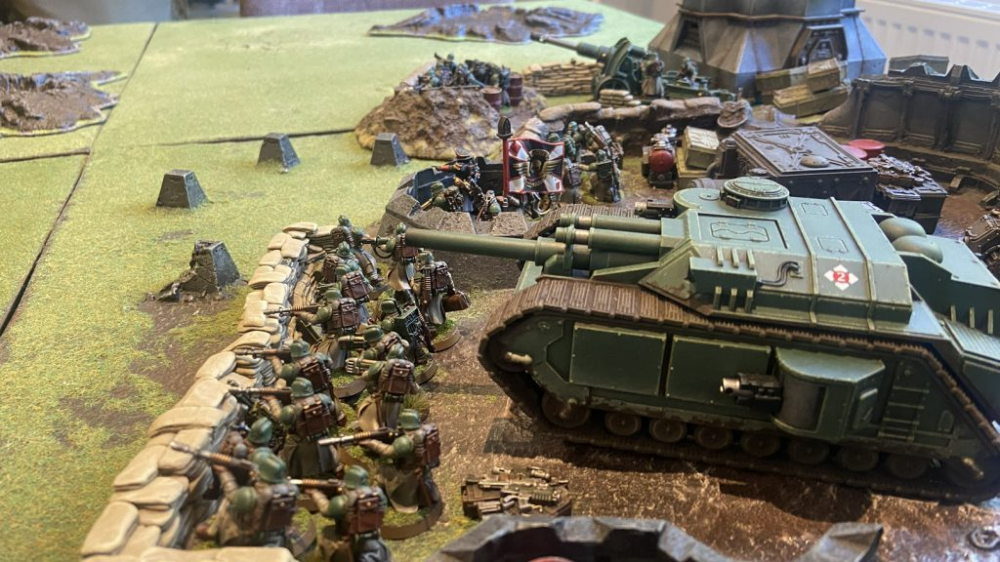
The Krieg 249th prepare to hold the line. Credit: Maisey
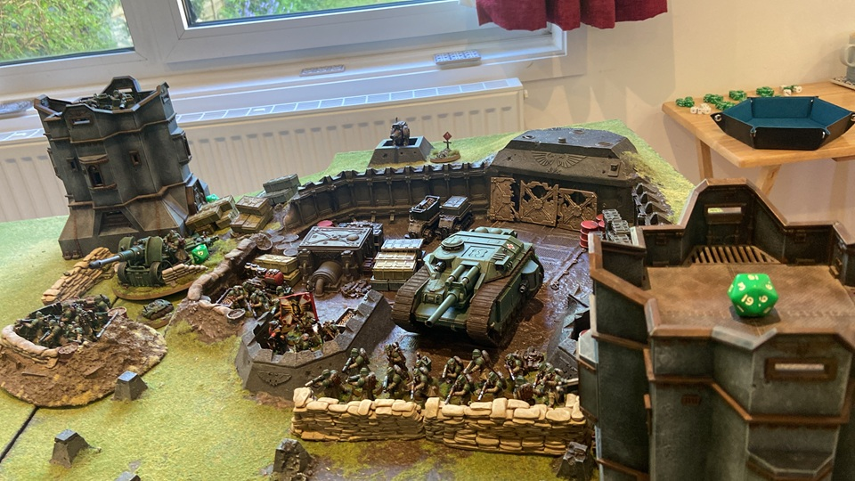
L and R: the two bastions we had to protect. Credit: MaiseyTo represent the battered state of the Krieg force, we used the pregame casualty rules in the evacuation mission The Last Shuttle. This meant that all Maisey’s units began the game having already taken some damage, forcing them to make do with what they had left.
Maisey: It felt like I had so little facing off against a literal wall of Orks. We had also decided that the Krieg Medic abilities could only bring back casualties sustained during the game, so these initial smaller starting units was what I had. On the bright side it did mean it triggered their Grim Demeanour abilities, which I forgot about just about every turn.This was a reasonably small game, at least in terms of Imperial numbers, but the three ork warbands looked suitably impressive, stretching unbroken from one side of the table to the other.
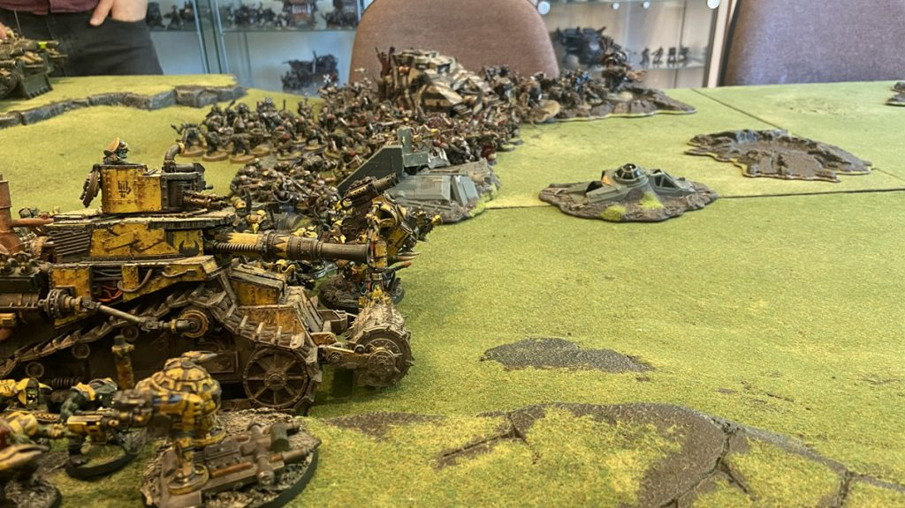
The ork line stretching off into the distance. Credit: MaiseyNot only did the orks have a numerical advantage, but to balance out the fact that they were attacking a fortified position (i.e. pretty open ground) we also gave every non-character unit the ability to respawn on a 5+ (hilariously this resulted in multiple Kill Tank respawns, which we vetoed after the third one appeared).
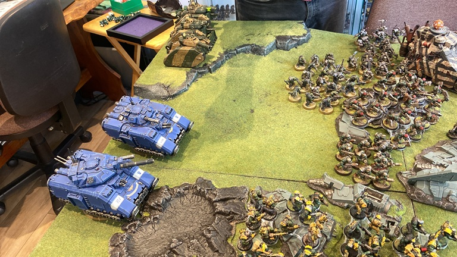
Imperial armoured elements arrive to the orks' rear. Credit: MaiseyWith all that decided, we started the game. Tom's squadron of Leman Russ battle tanks and my grav tanks rumbled up behind the orks and unloaded into them, doing… medium damage. Uh-oh. To prevent Maisey’s Krieg getting completely swamped, I had to deploy my one infantry unit: Chapter Master Drusus and the 5 Aggressors of Squad Lastratus. This meant my infantry were the closest, essentially baiting a huge chunk of the ork army into turning around and piling into the gravis-armoured lads.
On the one hand, this was major skin in the game. I love Drusus, and lavished attention on his paint job. I love his character, too: humorous, self-doubting, but ultimately eager to prove inspirational to other Imperial servants. Nothing could be more him than distracting a hundred orks to save a platoon of faceless guardsmen on the basis that it’d make for a good story.
But that did mean eating a whole bunch of power klaw attacks.
On the other hand, I felt reasonably confident taking the risk. Drusus is an absolute brick. He might not dish out massive damage, but he can tank it: Gravis captains halve all incoming damage, which combined with his 4+ invulnerable save and the Artificer Armour enhancement (Save 2+, FNP 5+) makes him extremely hard to shift.
Rolls shoulders, ignites power sword, waits for the Doom music to kick in.
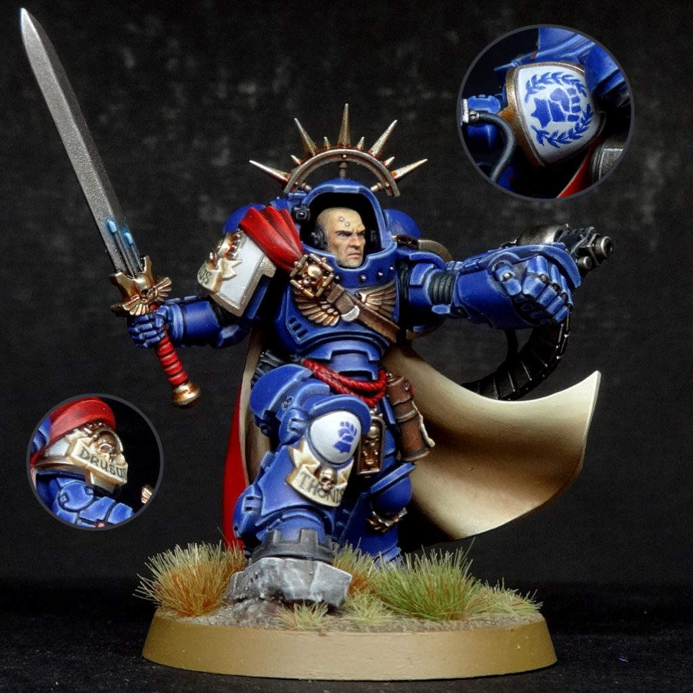
Primaris Captain in Gravis Armour: Chapter Master Drusus of the Cobalt Scions. Credit: Charlie BrassleyThe distraction worked well, and incredibly Sergeant Lastratus was still standing even though the other four Aggressors weren’t so lucky, so I never even got to destruction-test my Chapter Master’s armour. However, the orks’ left flank, still advancing on Fort Gretz, managed to bring down one of the two bastions.
Once we’d gutted their right flank, the Scions made a mad dash to secure the other bastion, given relentless covering fire by Tom’s tanks, which had been slagging killa kanz, Meganobz and wagons throughout the battle at a steady rate.
As is right and proper for a good game, the whole thing came down to the last turn, with the second bastion down to its last wounds. We managed to blow away the Deff Dread hammering at its walls, but there was a Big Mek in mega armour about to charge it with his killsaws.
And so, having survived since planetfall, five nameless Krieg guardsmen fixed bayonets, went over the top, and charged the Big Mek in a vital delaying action, enabling Drusus to catch up before the Mek had a chance to smack the Bastion. The Guard: absolute bloody heroes.
Maisey: Their serial numbers have been noted in dispatches.
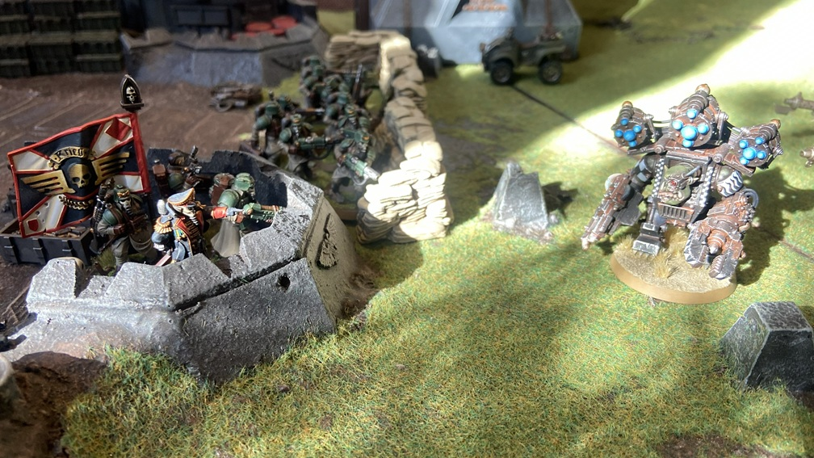
The Krieg prepare to charge the Big Mek before it can turn around and finish off the last few wounds on the remaining bastion. Credit: MaiseyGame 11: Boss Bonerippa’s Comeuppance
Players: Harvey (Nightfall 31st), Drew (kroot mercenaries)
Mission: Cut off the HeadPlayers familiar with Fury of da Beast may note that we played neither of the Extermination missions in the supplement during the Extermination phase. However, many of the missions are labelled as being suitable for use in other campaign phases, and Cut off the Head is one of them. Ultimately these co-op campaigns are about seeing where the story leads and then picking the missions most suited to telling the next chapter.
In this case, as a natural coda to the campaign, Harvey and Drew were entirely sick of Boss Bonerippa escaping every time, so put together their sneakiest light infantry, and crept up on Bonerippa’s camp in the dead of night. In the early turns of the mission, as they knifed the sentries without raising the alarm, they were resisting the urge to splurge command points. As a result, when they finally got to Bonerippa and gave him a good shanking, they had enough CP to absolutely one hundred percent definitely make sure his ass was dead.
At last, Bonerippa's reign of gittishness was over.
This was a resounding success, but now they’d killed the boss, the orks had woken up. Drew and Harvey’s troops were standing CP-less and vulnerable in the middle of the camp. A key stipulation for victory in this mission is that if you take over 50% casualties, you lose. The exfiltration is, arguably, the hardest part (even though the first part has its challenges).
Drew: As previously mentioned, newest bosomiest buddies the Kroot and Nightfallers were all too happy to turn BoneRippa into a particularly ornate pin cushion by the cover of darkness. This mission was run with no turn limit, and so we got to take a leisurely sneak up to any waiting sentries and make sure everything was definitely dead before moving on. But like Charlie said, the real issue came during exfiltration. The reinforcement Orks arrived on both flanks and just annihilated the first squad of 20 Kroot they came into contact with. What followed was a tense and noble leap-frogging escape, where the two armies took it turns to bring up the rear and feed a few more soldiers to the encroaching Orks. It was by far my favourite game of the weekend, with a nail biting ending that we only just managed to snatch from the jaws of defeat: perfection.Harvey: Finally, a chance for Lt. Kyrie, Ranger of Nightfall, to show his quality. Getting in was easy: We had an entire army capable of scout moves between Kroot carnivores and Ranger “Kasrkin” Veterans, so silencing the sentries and picking off sleeping mobs of Orks was a matter of patience and timing. Kyrie and his veterans then unceremoniously bathed Bonerippa and his nobz in point blank plasma/lasfire and grenades, killing them all in narratively convincing fashion before the Kroot shaper took the warboss’ blasted head as proof. Ensuring the boss’ death ate all our CP though, and then the camp woke up in a big way. What had previously been an easy mission turned into a really tense fighting withdrawal with the Nightfallers and Kroot bleeding for each other in turn, but ultimately managing to eke out the victory having not lost so many elites that the cost of victory was too high (we didn’t quite lose 50% of our points). I agree with Drew, this was the best game of the campaign: Recon regiment got to do recon regiment things!
With Bonerippa’s death, we had won the best of 3 Extermination missions, and the ork invasion of Aetolia was effectively over. Most of the Imperial forces gave each other an exhausted pat on the back and staggered back onto their transport ships, bound for Tyranid-swamped Eressus Tertia.
So, Campaign System Good?
The assignment was to switch my brain off and have fun. This was pretty likely given that I was spending a long weekend with four old friends, and so shock! horror! that’s exactly what happened. But the satisfaction was deepened by getting to relax and enjoy something I spent months working on. You can kind of tell how immersed I was by how terribly I did at remembering to take any damn photos to prove it.
The thing I enjoyed most was finally getting to use the nemesis system. We even allowed one of the Big Meks to level up (normally it’s limited to warbosses). Big Mek Ulrak Tinmangla was, however, immediately considered too dangerous to live after rolling the nemesis upgrade Inspiring, enabling him to call bonus Waaaghs! on turns four and five. Since he wielded a shokk-attack gun this essentially made him work a bit like a kunnin general, standing at the back and sending waves of ladz at us. Drew’s kroot gave him a very fatal seeing to at the next opportunity. (Drew: Nom.)
Other bosses of note included Major Wazgul Zodruk, a Blood Axe warboss who escaped death at the hands of Harvey’s Guardsmen thanks to some Gretchin. Following Major Zodruk’s grotty escape we started calling him Major Grotface, and this proved prophetic when he lost a second time to Harvey’s Guard and was immediately assassinated by his peers.
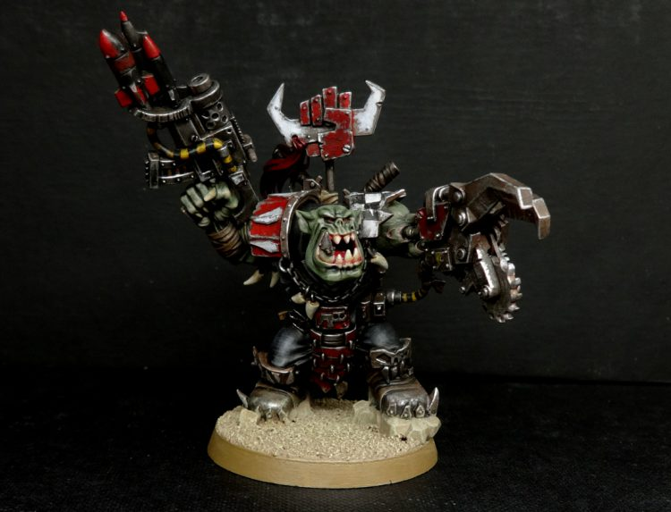
Boss Bonerippa, pictured without his favourite squigs. Credit: Charlie BrassleyAnother Blood Axe warboss, Kansnik, gained some notoriety, but the real emergent star of the show, the git who wouldn’t quit, was of course Bonerippa (and his squig Gnasha). He just kept surviving games, often because we didn’t have the spare Command Points to ensure his death, and possibly on one occasion because we were enjoying him too much. By the end of the Fulcrum he got up to level 4, and had become Very Morky (+2 attacks to his ranged weapons), Brutal (+1 Damage on melee weapons, very nasty) and had an extra attack squig called Bounca. At one point after being tenderised by Drew’s Kroot Rampagers he briefly became insecure, and developed a lasting hatred of said Rampagers, but ultimately bounced back with a series of improbably kunnin escapes until his eventual assassination in the final game. For me, having this through-line helped bring the orks to life that much more.
Thoughts from the Other Players on Fury of da Beast
Tom: Charlie summed it up pretty well, I went into this expecting to enjoy myself and I did. It was a fun weekend of carnage and telling stories with my friends, getting lots of models on the table, and rolling lots of dice. I like to put a lot of character into my armies when I build them and it’s games like this that bring the characters to life.Maisey: This weekend was fun, but intense. In general I find playing 40K exhausting due to its complexity, so four straight days of gaming pretty much wiped me out, mentally, for nearly two weeks. However, this is a much more fun way of playing vs PVP 40K. Cooperating with your friends is a much more enjoyable situation to be in. When we do another one of these campaigns the Krieg will be leading the charge over the top to join in.
Drew: As said previously, this is my favourite mode of 40k. It's pure treats, playing alongside your friends, puzzling out the same problems and shaking your fists at the sky as the same grotbreather escapes over and over again. The weekend was entirely narrative and is directly responsible for at least two spin off campaigns, a smattering of new units, some distinctly Nightfaller-y cloaks for the Kroot and my burning desire to do the whole thing again next year.Harvey: This campaign proved several things: I already knew the mode was a ton of fun (having been quite involved in the playtesting process using the Nightfallers, coincidentally), but this showed us that the system works with teams of 3 (though more thought does need to go into army lists as you have a lot fewer points each to work with), and that jury-rigged scenarios work perfectly well with the ork behaviour algorithms on top. The big game was truly excellent, and the almost RPG-scenario feel of the assassination mission was top tier. It’s the best narrative 40k experience I’ve played without needing a GM.
Want to Try It Yourself?
If all this nonsense has left you wanting to have a go, you can download the rules here:
You can also read every Fury of da Beast post right here on Tabletop Battles, some of which include guidance on gathering your own glorious Ork horde. Given the impending release of loads of awesome new ork minis, it’s the perfect time. I’m extremely stoked for some of the ork sculpts recently shown off in the upcoming Armageddon launch box, and can’t wait to see what else might come out of the studio.
Will Furies of the Beast and Swarm be updated for the New Edition of Warhammer 40K?
Yes, but I plan to wait until we have a new Codex: Orks to do so. Hopefully the supplement will still mostly work, but I imagine the new edition will impact the game balance in many if not all the missions. I would also like to update Fury of the Swarm with the new edition, and will probably not wait for the Tyranids’ Codex release since we’ve no way to know when that will be.
Until I get my hands on the whole ruleset, it’s hard to say how much work will be involved in updating the two supplements, but since I’m currently painting up a Tyranid army to use for this exact purpose, it seems likely I’ll have to figure it out at some point!
Thanks for Reading
Look, despite the effort that went into this post I fully recognise that it's serving a niche within a niche. So if you made it here and even more heroically made it to this final sendoff, it would be great to hear if you enjoyed it, and if there's things you wish we did more of. Maybe next time you'd like us to go into more/less detail about individual games, or explain more about how we improvised missions. Whatever the case, dear reader, it's always great to hear from you so that I can factor your thoughts into whatever nonsense I write next.
Have any questions or feedback? Drop us a note in the comments below or email us at contact@tabletopbattles.com. Want articles like this linked in your inbox every Monday morning? Sign up for our newsletter. And don't forget that you can support us on Patreon for backer rewards like early video content, Administratum access, an ad-free experience on our website and more.Originally published on Goonhammer.


Leave a Comment